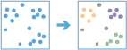

Elementų analizės įrankių rinkinį sudaro daug įvairių įrankių, kuriuos galite pasiekti ir naudoti. Šie įrankiai toliau suskirstyti į kategorijas. Šios kategorijos yra tiesiog loginės grupės ir jos neturi įtakos tam, kaip pasieksite ar naudosite įrankius.
Sumuoti duomenis
Šie įrankiai apskaičiuoja bendrą elementų, esančių tam tikroje teritorijoje ar šalia kitų objektų, kiekį, ilgius, plotus ir pagrindinius atributinių laukų statistinius rodiklius.
- Agreguoti taškus apskaičiuoja taškų, patenkančių į nurodytas teritorijas, statistiką.
- Sujungti elementus perkelia atributus iš vieno sluoksnio ar lentelės į kitą pagal erdvinius ir atributų ryšius.
- Sumuoti šalia apskaičiuoja tam tikru atstumu esančių elementų ir jų atributų statistiką.
- Sumuoti viduje apskaičiuoja persidengiančių elementų ir jų atributų statistiką.
- Sumuoti centrą ir išsisklaidymą apskaičiuoja centrinius elementus ir kryptinį išsisklaidymą.
Agreguoti taškus |

|
Naudojant taškų ir plotinių elementų sluoksnius įrankis randa, kurie taškai patenką į kurią teritoriją bei apskaičiuoja kiekvienos teritorijos taškų statistiką. Pavyzdžiui:
- Turint nusikaltimų taškus, apskaičiuoja nusikaltimų skaičių savivaldybėse ar kitame administraciniame vienete.
- Randa aukščiausią ir žemiausią norimo įmonės filialo apyvartą pagal savivaldybę.
Sujungti elementus |

|
Parinktis Sujungti elementus perkelia atributus iš vieno sluoksnio ar lentelės į kitą pagal erdvinius ir atributų ryšius. Pavyzdžiui:
- Prideda bendrą ribų ar demografinę informaciją prie jūsų įvykių duomenų.
- Identifikuoja artimiausią infrastruktūrą šalia žinomos vietos.
- Nustato gyvenamųjų vietų, kurios patenka į potvynio zonas, skaičių.
- Identifikuoja įvairių laukinės gyvūnijos rūšių buveines.
Sumuoti šalia |

|
Randa elementus, kurie yra tam tikru atstumu nutolę nuo įvesties sluoksnio elementų. Atstumas gali būti matuojamas tiesia linija arba naudojant kelius pagal pasirinktą kelionės režimą. Statistiniai rodikliai apskaičiuojami greta esantiems elementams. Pavyzdžiui:
- Apskaičiuoja gyventojų, gyvenančių 5 min. atstumu važiuojant automobiliu nuo planuojamos parduotuvės vietos, skaičių.
- Apskaičiuoja reguliuojamų sankryžų skaičių penkių minučių atstumu nuo pasiūlytos naujos parduotuvės, įvertinant pasiekiamumą.
Sumuoti viduje |

|
Randa plotus (arba plotų dalis), kurios tarpusavyje persidengia ir apskaičiuoja statistiką apie persidengimą. Pavyzdžiui:
- Turint baseinų plotų sluoksnį ir žemėnaudos plotų sluoksnį, galima pagal žemėnaudos tipą apskaičiuoti bendrą kiekvieno baseino žemėnaudos plotą.
- Turint sklypų ir savivaldybių sluoksnius, galima apskaičiuoti neužstatytų sklypų kiekvienoje savivaldybėje skaičių.
Sumuoti centrą ir išsisklaidymą |

|
Šis įrankis naudoja taškinius elementus, kad apskaičiuotų centrinį elementą, vidutinį centrą, medianos centrą ir elipsę (išsisklaidymą). Pavyzdžiui:
- Turint blokų grupės centroidų rinkinį, galima panaudoti pagal populiaciją pasvertą centrinį elementą norint rasti, kuri miesto dalis yra pasiekiamiausia menų centrui.
- Turint briedžių stebėjimo parke per keletą metų sluoksnį, galima panaudoti vidutinį centrą norint rasti, kur vasarą ir žiemą renkasi briedžiai.
- Turint gaisrų sluoksnį, galima naudoti medianos centrą norint išmatuoti centrinę gaisrų tendenciją, išvengiant periferijos išskirčių.
- Turint požeminio vandens šulinių pavyzdžių sluoksnį, galima naudoti elipsę norint nustatyti, kaip plinta užkratas.
Duomenų praturtinimas
Šie įrankiai leidžia gauti daugiau informacijos apie teritorijas. Nurodytoms teritorijoms pateikiama detali demografinė ir statistinė informacija.
- Įrankis Praturtinti sluoksnį suteikia informacijos apie žmones, vietas, verslą nurodytoje teritorijoje arba teritorijoje, nutolusioje tam tikru atstumu nuo vietos ar pasiekiamoje per tam tikrą važiavimo laiką.
Praturtinti sluoksnį |

|
Suteikia informacijos apie žmones, vietas, verslą nurodytoje teritorijoje arba teritorijoje, nutolusioje tam tikru atstumu nuo vietos ar pasiekiamoje per tam tikrą važiavimo laiką
Surasti vietas
Šie įrankiai naudojami norint nustatyti arba sukurti elementus, kurie atitinka jūsų nurodytus kriterijus. Kriterijų tipas priklausys nuo to, kurį įrankį naudojate. Pavyzdžiui, jūsų kriterijai gali būti pagrįsti erdvinėmis arba atributų užklausomis, matomomis vietomis pagal nurodytą aukštį, konkrečių tėkmės taškų pasroviui esančiomis vietomis arba kelionės laiku tam tikromis eismo sąlygomis.
- Naudojant įrankį Pasirinkti geriausią infrastruktūrą, parenkamos geriausios vietos infrastruktūrai, priskiriant vietas, kuriose yra paklausa tokiai infrastruktūrai ir kurios tinka nurodytam tikslui.
- Kurti matymo lauką sukuria plotus, kurie matomi iš jūsų nurodytų vietų.
- Kurti upių baseinus sukuria upių baseinų plotus remiantis jūsų nurodytomis vietomis.
- Sukurti naujus elementus iš vietų jūsų analizuojamame plote sukuria naujus plotus, kurie atitinka tam tikrus kriterijus.
- Rasti centroidus suranda įvesties elementų geometrinį centrą (centroidą).
- Rasti esamas vietas suranda esamus sluoksnio plotus, kurie atitinka tam tikrus kriterijus.
- Rasti panašias vietas suranda vietas, panašiausias į vieną ar daugiau lyginamų vietų, atitinkančių nurodytus kriterijus..
- Įrankis Geokoduoti vietas iš lentelės konvertuoja adresus iš lentelės į koordinates.
- Įrankis Trasuoti pasroviui nustato tėkmes, esančias pasroviui nuo jūsų nurodytų vietų.
Pasirinkti geriausias paslaugas |

|
Parenkamos geriausios vietos infrastruktūrai, priskiriant vietas, kuriose yra paklausa tokiai infrastruktūrai ir kurios tinka nurodytam tikslui.
Kurti matymo lauką |

|
Sukuria plotus, kurie matomi remiantis jūsų nurodytomis vietomis.
Kurti upių baseinus |

|
Sukuria upių baseinų plotus remiantis jūsų nurodytomis vietomis.
Nustatyti naujas vietas |

|
Sukuria naujus elementus tiriamajame plote, atitinkančius eilę jūsų nurodytų kriterijų. Šie kriterijai gali būti paremti atributinėmis užklausomis (pavyzdžiui, sklypai, kurie yra laisvi) arba erdvinėmis užklausomis (pavyzdžiui, 1 mylios atstumu nuo upės).
Rasti centroidus |

|
Randa kiekvienos įvesties kelių taškų, linijos ar plotinio elemento geometrinį centrą (centroidą).
Rasti esamas vietas |

|
Išrenka esamus elementus tiriamame plote, atitinkančius eilę jūsų nurodytų kriterijų. Šie kriterijai gali būti paremti atributinėmis užklausomis (pavyzdžiui, sklypai, kurie yra laisvi) arba erdvinėmis užklausomis (pavyzdžiui, 1 mylios atstumu nuo upės).
Geokoduoti vietoves iš lentelės |

|
Adresai konvertuojami į koordinates. Naudokite šį įrankį adresams, pateiktiems Excel skaičiuoklėje arba CSV faile.
Rasti panašias vietas |

|
Suranda vietas, panašiausias į vieną ar daugiau lyginamų vietų, pagal jūsų nurodytus kriterijus.
Trasuoti pasroviui |

|
Nustatomos tėkmės, esančios pasroviui nuo jūsų nurodytų vietų.
Dėsningumų analizavimas
Šie įrankiai leidžia nustatyti, įvertinti ir atvaizduoti erdvinius duomenų dėsningumus.
- Apskaičiuoti tankį naudoja kiekybinę reiškinio informaciją ir ją atvaizduoja žemėlapyje.
- Rasti karštuosius taškus identifikuoja statistiškai reikšmingas elementų sankaupas.
- Rasti išskirtis nustato, ar jūsų duomenyse yra statistiškai reikšmingų išskirčių pagal erdvinį požymį.
- Įrankis Rasti taškų sankaupas randa taškų elementų sankaupas juos supančioje aplinkoje (triukšme) pagal jų pasiskirstymą erdvėje.
- Interpoliuoti taškus leidžia prognozuoti reikšmes, atsižvelgiant į taškų rinkinio duomenis.
Apskaičiuoti tankį |

|
Tankio analizės įrankis naudoja kiekybinę reiškinio informaciją ir ją atvaizduoja žemėlapyje. Šį įrankį galite naudoti, pavyzdžiui, norėdami pamatyti žaibo smūgių, tornadų koncentracijos vietas ar gyventojų tankį tam tikroje teritorijoje.
Rasti karštuosius taškus |

|
Šis įrankis pateikia žemėlapį, grafiškai parodantį statistiškai svarbias elementų sankaupas. Įrankis gali būti naudojamas norint rasti brangaus ir pigaus nekilnojamo turto, nusikaltimų, avarijų, nedarbo, biologinės įvairovės aukštos (raudona) ir žemos (mėlyna) koncentracijos židinius.
Rasti išskirtis |

|
Šis įrankis sukuria žemėlapį, parodantį statistiškai svarbias elementų sankaupas ir erdvines išskirtis jūsų duomenyse. Naudokite šį įrankį norėdami identifikuoti elementus, kurių reikšmės smarkiai skiriasi nuo kaimyninių elementų. Šį įrankį galite naudoti, pavyzdžiui, norėdami rasti neįprastas išlaidų tendencijas, nustatyti, kur yra didžiausias atotrūkis tarp turtingųjų ir nepasiturinčiųjų tam tikroje teritorijoje, arba nustatyti, ar JAV yra apygardų, kurių gyventojų tikėtina gyvenimo trukmė yra neįprastai trumpa, palyginti su kaimyninėmis apygardomis.
Rasti taškų sankaupas |
 |
Šis įrankis aptinka sritis, kuriose taškai koncentruoti ir kuriose juos skiria tuščios arba mažo tankio sritys. Sankaupai nepriklausantys taškai pažymimi kaip triukšmas.
Interpoliuoti taškus |

|
Šis įrankis leidžia prognozuoti reikšmes, atsižvelgiant į taškų rinkinio duomenis. Įrankis naudoja taškinius duomenis su reikšmėmis kiekviename taške ir sukuria plotus, klasifikuotus pagal prognozuotas reikšmes. Šį įrankį galite naudoti, pavyzdžiui, kritulių lygiui baseine prognozuoti, atsižvelgiant į atskirų kritulių matavimo duomenis.
Naudoti gretimybes
Šie įrankiai leidžia atsakyti vieną dažniausių erdvinės analizės klausimų: "Kas yra šalia ko?"
- Sujungti išvykimo ir atvykimo vietas nustato atstumą ar kelionės laiką tarp taškų porų.
- Kurti buferius sukuria zonas aplink elementus tam tikru atstumu.
- Sukurti važiavimo laikų plotus randa teritorijas, pasiekiamas per nurodytą laiką.
- Rasti artimiausią naudojamas norint surasti artimiausius elementus.
- Planuoti maršrutus randa efektyviausią būdą paskirstyti maršrutus transporto priemonėms, turinčioms sustoti numatytuose sustojimo taškuose.
Sujungti išvykimo ir atvykimo vietas |

|
Sujungti išvykimo ir atvykimo vietas nustato atstumą ar kelionės laiką tarp taškų porų. Įrankis gali pateikti atstumus tiesia linija, kelių tinklu ar kelionės laiką. Naudojant šį įrankį galima
- Apskaičiuoti, kiek laiko darbuotojai sugaišta iš namų pasiekdami darbo vietą.
- Apskaičiuoti, kokiu atstumu atvyksta klientai į parduotuves. Remiantis šia informacija galima planuoti komercinę veiklą, reklamos akcijas, naujų parduotuvių įkūrimą.
- Apskaičiuoti automobilių parko planuojamą kilometražą. Vėliau, įrankiu Sumuoti Viduje kilometražą galima apskaičiuoti pagal regionus.
Pagal nurodytus pradžios ir pabaigos taškus, įrankis pateikia sluoksnį, susidedantį iš maršrutų linijų bei jų verčių tarp išvykimo ir atvykimo vietų porų.
Kurti buferius |

|
Buferis yra plotas, dengiantis duotą atstumą nuo taškinio, linijinio ar plotinio elementų.
Buferiai dažnai kuriami tam, kad būtų galima atlikti papildomą analizę naudojant kitus įrankius, pavyzdžiui, Perdengti sluoksnius. Tarkime, jei domina, kurie pastatai yra vieno km. atstumu nuo mokyklos, atsakymas gali būti gautas pirmiausia sukūrus vieno kilometro buferį apie mokyklą ir perdengus buferį pastatų sluoksniu. Rezultatas bus sluoksnis iš pastatų, nutolusių nuo mokyklos nedidesniu nei vieno kilometro atstumu.
Sukurti važiavimo laikų plotus |

|
Pasiekiamumo zona – tai teritorija, kuri gali būti pasiekta nuvažiavus tam tikrą atstumą arba per tam tikrą kelionės laiką. Įrankis Sukurti važiavimo laikų plotus gali padėti atsakyti tokius klausimus:
- Kur galiu atsidurti per 30 min?
- Kur galiu atsidurti per 30 min., jei išvažiuosiu 18.00 val. piko metu?
- Kokią miesto dalį gali pasiekti gaisrininkai per penkias minutes? Kaip pagerės priešgaisrinė apsauga pastačius naują gaisrinę?
- Kiek parduotuvė aptarnauja žmonių? Kokios vietos yra arčiau nei 10 km atstumu nuo parduotuvių?
Rasti artimiausią |

|
Apskaičiuoja kelionės kainą tarp įvykių ir infrastruktūros ir kurie yra artimesni vienas kitam. Rezultatas yra sluoksnis, rodantis geriausius maršrutus tarp įvykių ir infrastruktūros bei kiekvieno maršruto kelionės kainą (laiką ir atstumą). Pavyzdžiui, rasti avarijos vietai artimiausią ligoninę; artimiausią bankomatą nuo esamos vietos.
Planuoti maršrutus |

|
Pateikite sustojimų sąrašą ir automobilių, galinčių juos aplankyti skaičių, Planuoti Maršrutus apskaičiuos, kaip efektyviai paskirstyti sustojimus automobiliams ir sudarys maršrutus.
Šį įrankį galima naudoti mobilios inspektorių, vertintojų, techninės pagalbos ar kitų darbuotojų grupės darbo planavimui; siuntinių priėmimui ir pristatymui; žmonių išvežiojimui organizuoti.
Valdyti duomenis
Šie bendro pobūdžio įrankiai skirti geografinių duomenų valdymui ir jų paruošimui analizei.
- Tirpdyti ribas sujungia besiribojančius ir turinčius tas pačias atributų reikšmes plotinius objektus.
- Atsisiųsti duomenis leidžia eksportuoti ir atsisiųsti norimos teritorijos duomenis.
- Generuoti teseliacijas sukuria teseliacijas pagal jūsų duomenų aprėptį.
- Sujungti sluoksnius kopijuoja visus dviejų ar daugiau sluoksnių elementus į naują sluoksnį.
- Perdengti sluoksnius apjungia dviejų ar daugiau sluoksnių informaciją į vieną sluoksnį. Sluoksnių perdengimą galite įsivaizduoti kaip vienas ant kito sudėtų sluoksnių pervėrimo metu gautą informaciją.
Sulieti ribas |

|
Persidengiantys ar bendrą ribą turintys objektai yra apjungti į vieną plotą.
Galite pasirinkti, kurie elementai bus apjungiami, nurodydami lauką. Pavyzdžiui, jei turite seniūnijų sluoksnį, kuriame kiekvienas administracinis vienetas turi pavadinimą State_Name atributiniame lauke, galite apjungti naudodami State_Name atributą. Besiribojančios seniūnijos bus apjungtos, jei turės tą pačią State_Name reikšmę. Rezultatas bus savivaldybių teritorijos.
Atsisiųsti duomenis |

|
Sukuria zip failą, CSV arba KMZ su duomenimis iš jūsų sluoksnių ir jūsų nurodytos teritorijos.
Generuoti teseliacijas |

|
Generuoja teseliacijas jūsų tiriamoje teritorijoje pagal nurodytą formą ir dydį.
Sujungti sluoksnius |

|
Kopijuoja elementus iš dviejų ar daugiau esamų sluoksnių į naują sluoksnį, pvz.:
- Turite Anglijos, Velso ir Škotijos sluoksnius ir norite juos sujungti į vieną Didžiosios Britanijos sluoksnį.
- Turite 12 sluoksnių su sklypų duomenimis atskirose seniūnijose. Norite sujungti juos į vieną sluoksnį tik su tais atributais, kurie bendri visiems 12 įvesties sluoksnių.
Perdengti sluoksnius |

|
Perdengimas sujungia du arba daugiau sluoksnių į vieną sluoksnį. Sluoksnių perdengimą galite įsivaizduoti kaip vienas ant kito sudėtų sluoksnių pervėrimo metu gautą informaciją, pvz.:
- Kurie sklypai patenka į per paskutinius 100 metų potvynių užliejamą teritoriją? (Patenka yra kitas būdas pasakyti yra virš)
- Kokie keliai patenka į kokias seniūnijas?
- Kokios žemėnaudos yra virš kokio dirvožemio tipo?
- Kurie šuliniai patenka į apleistas karines bazes?